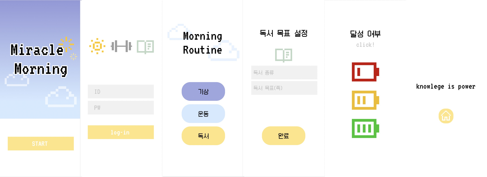
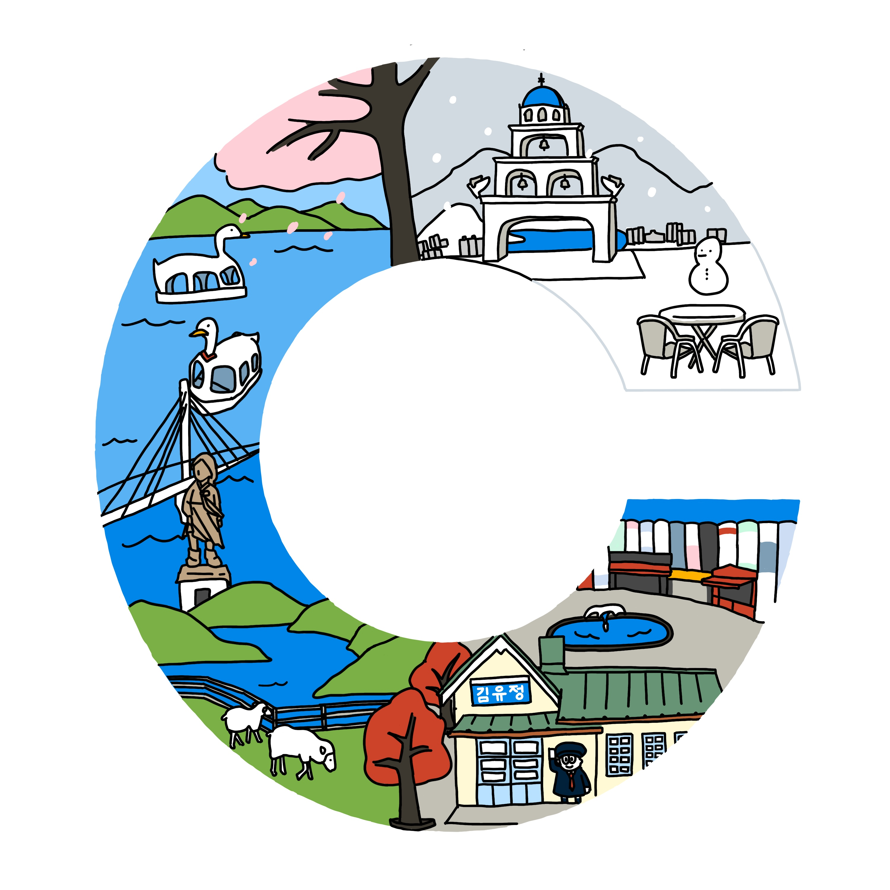

디지털인문예술 입문
-반려묘 홈페이지

구글 사이트를 사용했습니다. 반려묘의 프로필과 사진을 담았습니다. 로고와 파비콘에는 소소한 디지털 드로잉이 들어갔습니다.
누르면 홈페이지로 이동합니다.-피그마를 이용한 UI 디자인
피그마를 사용했습니다. 미라클 모닝을 주제로 디자인했습니다. 목표설정과 달성을 메인으로 만들었습니다.
누르면 뷰잉으로 이동합니다.스토리텔링 디자인
-춘천을 상징하는 그림
<프로크리에이트를 사용한 디지털 드로잉입니다. 춘천의 이니셜 첫글자 C를 네등분으로 나눈 뒤, 그 안에 춘천의 계절별 관광명소를 그려 소개했습니다.